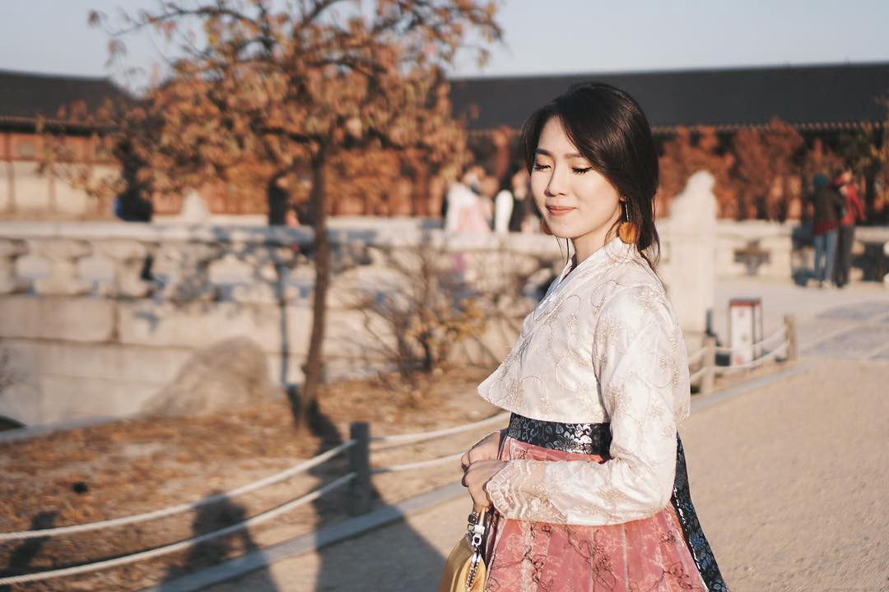
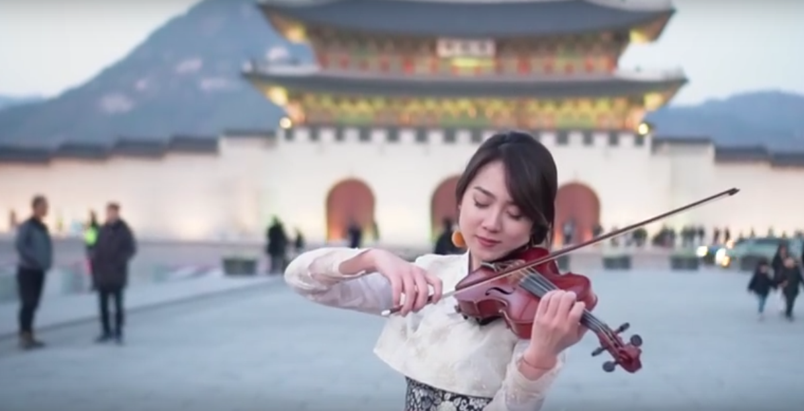

- Lindsey Stirling
- Kezia amelia
- Sarah Chang
- 조 상 훈
Kezia amelia

Cantik dan berbakat, dua kata inilah yang rasanya sepadan untuk menggambarkan sosok Kezia Amelia. Dara cantik satu ini berhasil menarik perhatian masyarakat Indonesia. Ia merupakan pebiola cantik nan berbakat yang berasal dari Indonesia.
Bernama lengkap Kezia Amelia Angkadjaja, ia adalah seorang pebiola cantik yang telah mengharumkan nama bangsa dengan bermain biola di negeri gingseng, Korea. Namanya mulai banyak diperbincangkan netizen lewat akun media sosial Instagram.
Paket Lengkap, Sudah Cantik Berbakat Pula
Kepiawaiannya dalam menggesek biola membuat berjuta pasang mata terpukau akan dirinya. Tidak hanya itu, ia juga memilik paras yang cantik nan menawan dan kedua hal itulah yang memang menjadi daya tarik luar biasa dari sosok yang akrab disapa Kezia ini. Tetapi jangan salah, permainan biola Kezia juga tak kalah cantik dengan parasnya.
Salah satu videonya yang banyak ditonton oleh warganet di akun Youtube-nya adalah pada saat ia memainkan biola di negeri yang terkenal akan drama Koreanya ini. Usut punya usut, ini merupakan pengalaman pertama kalinya bermain biola di negeri orang, sempat terbesit malu pada benaknya karena mungkin dari nuansa tempat, orang, dan budayanya juga yang berbeda.
Pemilihan Lokasi Shooting dan Lagu Saat Kezia di Korea Selatan
Di dalam video berdurasi sekitar empat menit tersebut, ia terlihat cantik dengan mengenakan Hanbok, menawan dengan kepiawaiannya
memainkan lagu Back In Time (OST “The Moon that Embraces The Sun”).
Ia menuliskan tulisan berikut pada description box di akun Youtube-miliknya:
“2017 is almost over! Before this year passes, I want to share this violin cover with you. I recorded this track sometime ago, and decided to make the video on my trip to Korea this year. It was freezing when we shot this (a week after shooting this snow started falling in Seoul), but I think it’s worth it.”

Kezia sendiri juga memilih Gyeongbok Palace sebagai lokasi ia bermain biola tersebut
yang dimana istana itu merupakan lokasi shooting dari drama Korea berjudul The Moon That Embraces The Sun. Permainan biolanya tersebut sontak menuai berbagai pujian dari warganet dan mendorong mereka untuk men-subscribe serta memberikan Like untuk videonya.
Bahkan, ada salah satu komentar dari sekian banyak komentar yang dituliskan dari
kolom komentar menyebutkan bahwa Kezia berhasil menyihir para viewers-nya dengan
memainkan lagu favorit mereka dari drama favorit pula. Segalanya yang terdapat di video
itu bisa membius penontonnya dalam sekejap untuk takjub dan bisa memutar video Kezia hingga berulang kali.